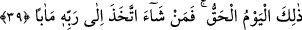

müşâhede ederler.
Bu âyet-i kerîmede şöyle bir işâret vardır: Ancak sırlar, kalpler ve bu ikisinin ruh
semâsı ile nefis arzı arasındaki güçleri Cenâb-ı Hakk’a nefs-i emmare’ye ve ardından
gidilen hevâ ve hevese şefâat hakkında hiç bir şey söyleyemeyeceklerdir. Çünkü bunlar
arasında bir bağ vardır. Zira bunların tümü ruh ve kalıbın evladıdırlar. Tıpkı Hz.
Nûh’un oğlu Kenân hakkında Hak Teâlâ’ya hitab edip O’nunla konuşamadığı gibi. Şunu
demek istiyoruz: Hz. Nûh oğlunu kurtaramadı. Zira kendisine şöyle hitab olundu: “Ey
Nûh! O asla senin ailenden değildir. Çünkü onun yaptığı kötü bir iştir. O halde
hakkında bilgin olmayan bir şeyi benden isteme.” (Hud, 11/46)
39. İşte o, kesin olarak gelecek gündür. O halde dileyen Rabbine varan bir yol
tutsun.
“İşte” onların yukarda zikredildiği şekliyle duracakları gün, bir başka ifâdeyle işte
ruhun ve meleklerin saf saf durdukları, ne onların ne de başkalarının ilâhi heybet ve
celalden dolayı konuşmaya kadir olamadıkları o büyük gün “o kesin olarak gelecek
gündür.” Yâni hiç kuşkusuz gerçekleşecek sâbit gündür. Bu günün gelmesini hiçbir güç
erteleyip geriye alamayacaktır. Çünkü bu günün geleceği ilmen kesindir. Şu halde vuku
bulma açısından da muhakkak ve kesin olmak zorundadır. Tıpkı gecenin geçmesinin
ardından sabahın zorunlu olarak gelmesi gibi. Bu âyet-i kerîmede o günün bütün vakit
ve zamanlarda meydana gelip vuku bulduğuna işâret vardır. Fakat onlar insanı alıkoyan
nefisleriyle ve heva ve hevesleriyle meşgul olduklarından dolayı bu gerçeği
görmüyorlar.
“O halde dileyen Rabbine varan bir yol tutar.” Bu âyetin başındaki “fa” harfi, fa-i
fasiha’dır. Bu harf, mahzuf bir şartı ortaya çıkarmaktadır. “Dilemek” fiilinin mef’ulü,
fiil şart olarak vaki olduğu için mahzuftur. Onun mefulünün cevabın mazmunu olması ve
cevabın bu dileme fiiline bağlanmasının garip düşmemesi bu konudaki dilbilgisi
kurallarına göredir.
“İlâ rabbihi” ifâdesinin başındaki “ilâ” harfi “meâben” kelimesine bağlıdır. Ancak
bunun “meâben”den önce getirilmesi, dikkatlerin “ilâ rabbihi” ifâdesine yöneltilmesi ve
âyet sonlarındaki ses uyumunun sağlanması içindir. Bütün bu açıklamaların ardından
burada şöyle denmiş oluyor: Madem ki mesele zikredildiği gibidir, bir başka ifâdeyle
yukarda zikredilen günün gelip çatacağı kuşkusuzdur. O halde şân-ı azîmi zikredilen
Rabbinin sevabına dönüş arzu eden kimse bunu iman ve itâat ile yapsın.
Katâde, “meâben” kelimesine “dönüş” değil, “yol” anlamı vermektedir.
Harf-i cerin meâben kelimesine bağlanması, kelimenin içindeki “iktiza ve îsal” yâni
“gerektirme ve vardırma” anlamından dolayıdır.